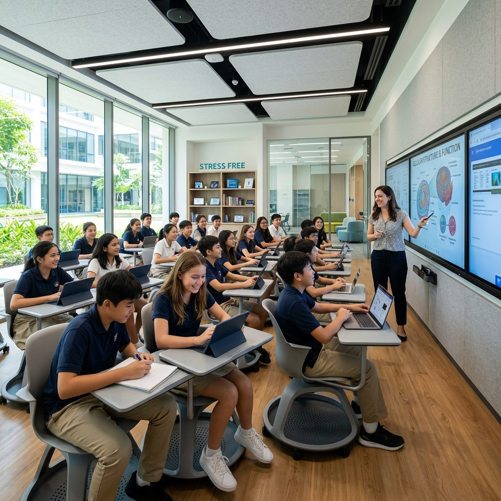

A seamless journey from foundational learning to professional specialization.

Our secondary setup is designed to challenge students academically while supporting their developmental needs. The curriculum promotes critical thinking, extensive laboratory activities, and foundational understanding in core subjects to prepare them for their board exams.
We offer specialized streams equipped with advanced laboratories and expert guidance. Our Jr College aims to provide intense scholastic preparation and conceptual clarity demanded by competitive entrance examinations.
Physics, Chemistry, Biology, Mathematics and IT. Ideal for medical and engineering aspirants.
Accountancy, Economics, OCM, SP, Mathematics. Perfect for business and finance careers.
History, Geography, Political Science, Psychology. For future leaders in humanities and civil services.